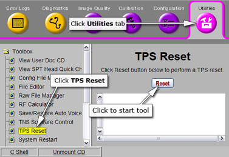
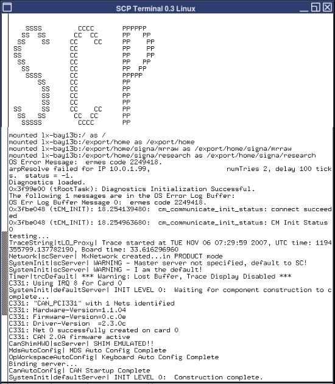

If the system is not working properly, you can try a TPS reset
to re-initialize the CAM chassis. This document provides instructions
for performing a TPS reset, and examples of the results output.
note:
In order to view the TPS reset output, you need to open
a C Shell terminal and type mgd_term. The AGP
and SCP windows open and will display the output.
Procedure
To perform a TPS reset, open the Common Services Desktop.
Under the Utilities tab, select TPS Reset from the left navigation
pane.
Figure 1.

Click Reset to begin the reset.
You will see this sequence of messages:
Reset/Download TPS was successful.
Reset/Download TPS in progress.
TPS has been reset.
The reset is complete. Proceed to the results examples in Finalization.
Finalization
See Figure 2 for an example of the typical output of the AGP terminal
and Figure 3 for an example of the SCP terminal from a successful TPS reset.
Figure 2. Typical AGP Output
Figure 3. Typical SCP
Output

Figure 4 provides an example of an interconnect
failure when a TPS reset fails.